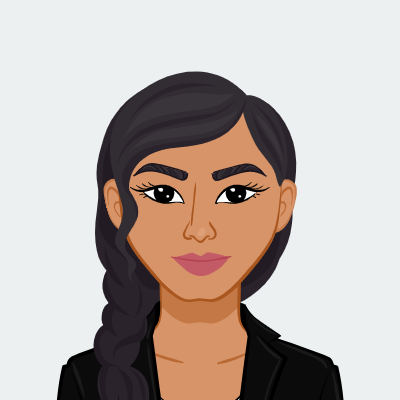

Hi, I'm Rishika Sharma
I’m a second-year Bachelor of Information Technology student at the University of Canberra, with a strong interest in cybersecurity, health technology, and artificial intelligence. I enjoy exploring how emerging technologies can be applied to solve real-world problems, particularly in healthcare and secure digital systems. I enjoy turning ideas into projects through design thinking, prototyping, and exploring emerging technologies like VR and AI.

Projects
VR Smart Campus
Immersive learning environment with virtual labs and classrooms.
Focusly App
A study space discovery app designed for university students
MediPen
Voice-assisted clinical documentation tool for nurses
Align
Smart glasses concept that helps reduce and prevent Tech Neck through real-time feedback.